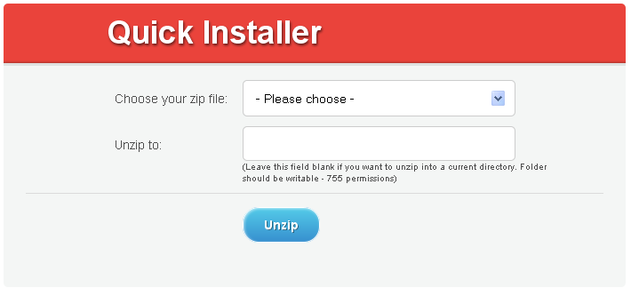

Preparations
In order to run Joomla template you need to perform some preparations.
First of all you need to download Joomla engine from the official website and http://joomla.org.
Please check the template software requirements and make sure you are downloading the required version of Joomla.
From the Downloads page you can get most recent version of Joomla 2.5.
In case you need earlier versions please use Download other Joomla packages link
-
When the Joomla package is downloaded you need to extract the files from the archive. This can be done using the default archive manager or using such applications as WinZip (Windows) or Stuffit Expander (MAC).
Then you need to create a database to store Joomla CMS data. You can create database using your hosting control panel or the phpMyAdmin too in case you are using local server. Feel free to check the details tutorial on how to create database.
Complete installation. Joomla Engine + Framework + Joomla theme + Sample data
This installation option is used if you doesn't have Joomla installation on your server. Fullpackage.zip archive used in this guide contains Joomla engine and the theme so you don't need to upload Joomla CMS package separately.
As soon as the template is downloaded and unzipped you should upload the archive joomla/fullpackage.zip using any FTP software like Filezilla or the Filemanager in your hosting control panel. The detailed tutorial on how to upload files can help you in case of any difficulties.
-
When that is done please upload the file joomla/unzip.php from the template package to the server into the same directory as the previous archive.
As soon as you finish please open your site in the browser and add the file name - unzip.php to the URL. It should look like this: yourwebsite.com/unzip.php
This is what you get:

In the drop-down list "Choose your zip file" please select fullpackage.zip and click "Unzip". It will start to uncompress the files on your server into the same directory. It will take a little while.
As soon as it is unzipped, you will see the list of files. Please open your site in the browser, - yourwebsite.com and start Joomla installation.
-
On Step 6 in your installation - "Main Configuration" it is necessary to select "sample_theme###" (where ### is the number of your theme) from the select box and click "Install Sample Data" button.
It is vitally important to install Sample data. Please do not ignore this step

As soon as the installation is complete, the template with the default content will automatically be activated on your site and will look like the demo on our template preview page.
Please note: Installing template sample data you'll have another user with Demo User privileges (full access) added to your database. The sample user login is "demo", password - "demo123".
You can delete Demo User though the Joomla administration panel in the "Users > Users Manager". In case you are planning to use sample data we recommend you to change Demo User user login and password.
Feel free to check the detailed video tutorial on how to use Joomla template quick installer
Joomla theme installation with sample data
This installation option is used in case you already have a Joomla CMS installed on your server and want to install Joomla theme with sample data. The sample data will make your Joomla website appear as at the template preview page with all sample articles, modules and site testing installed.
Please note: Installing of the Joomla theme sample data will replace all your Joomla website settings, modules and articles. Do not use this step if you have a ready Joomla website and just want to install the theme.
Template Installation
First of all you need to install the Joomla template and Framework. This can be done through the Joomla administration panel. Please install the template following the directions in Getting started if you have the site up part of this manual
Our templates are supplied with the sample pages, modules and configuration settings. In other words to make the template look as at the preview you need to install and configure the modules.
Sample data installation
If you want your site look like the demo you should install the dump.sql file.
Please note: the sample data SQL file should be installed only when you are done installing all additional modules and components
ATTENTION: import .sql file ONLY if your site is a clean installation of Joomla! CMS, and you have not yet created any content, articles, modules, etc. This step will erase all the work you've already done to your site. Otherwise, please skip to the - "Manually configuring template modules" step
To install dump.sql file you should do the following:
Before the dump import please make sure to change the default database prefix in the dump file ("jos_") to the tables prefix which is used in your Joomla database. In order to find out your Joomla database prefix please login into Joomla Admin, "Global Configuration" -> "Server" and find "Database Tables Prefix".
Then open your dump.sql file with any text editor (preferably Dreamweaver or Notepad) and replace all instances of "jos_" with your Joomla database prefix in the entire document using the Find and Replace tool (usually the Ctrl+H hot key). E.g.: xyz_
- Open your PhpMyAdmin tool (which is part of your Hosting Control Panel).
- Select the database you created for Joomla! CMS.
- Select "IMPORT" option and click "Browse" button
- Navigate to the "sources" folder of the template and select dump.sql file.
- Press "GO" button.
To complete the sample data installation please open the template package, go to the "sources/to root directory/" directory and upload it's content to your Joomla installation root.
If you don't have much experience with PhpMyAdmin tool, please check this tutorial on how to complete the steps above:
Getting started if you have the site up
The template you ordered is provided with bundle install packages that allow you to install the template and all required extensions in several clicks.
Framework Installation
Gantry Framework and all associated plugins can be installed using the "gantry_bundle.zip" package located in the template "joomla" directory.
Installing through the Joomla! CMS Extensions Manager:
- In the administration section of your Joomla! website go to the Extensions - Extensions Manager.
- Then in the "Upload package file" section open the Package File upload dialogue box by clicking on the "Browse" button.
- Find the "gantry_bundle.zip" archive from the "sources" folder in your downloaded template package, click Open and then click "Upload & install".
Please note that you may find Gantry Framework to be outdated as of the time of installing your theme. In this case please download the latest version of gantry framework package from the official website at http://www.gantry-framework.org/download

Please make sure you are downloading Gantry framework for Joomla 2.5. The package should be called gantry_joomla_framework-###.zip
Template installation
Joomla theme can be installed using "theme###.zip" archive located in the "joomla" directory of your template package. The archive can be installed as any other Joomla extension through the "Extensions Manager" interface as shown above.
Template Activation
When you are done with the installation you should activate it. Open the Joomla! administration section, then using the main menu please, go to the "Extensions - Template manager" page.
Then choose the newly installed template by clicking the checkbox and click "Make Default" button in the upper right corner. This will enable your template as a default one for your site.
Then click the template name to enter the template configuration page. You should assign the template to the website pages. To do this click "Toggle Selection" button in the "Menus assignment" section.

Third-party extensions installation
The template may have some modules that are not included into the default Joomla! installation and should be installed manually. All extensions are stored in the single bundle archive that is called "pkg_bundle.zip" and located in the "sources" directory of your template package. The installation procedure is the same as for the template bundle package install.
- From the Joomla! administration panel select "Extensions - Extensions Manager".
- Click the Browse button and select "pkg_bundle.zip" package from the template "sources" folder.
- Click the "Upload & Install" button.
- Then go to the "Extensions - Module manager" page. The newly installed module should appear in the modules list.
Open the module and set the configuration options according to the Modules Configuration table below.
You are free to install all extensions manually. In this case please extract "pkg_bundle.zip" archive and open "packages" folder. There you'll be able to find all third party extensions that are recommended for your particular template.
In case you are having issues with the bundle package install please extract files from the package using your archive manager, open "packages" folder and upload all extensions one-by-one using Joomla Extensions Manager interface.
K2 Component
K2 is a content component for Joomla! with CCK-like features developed by JoomlaWorks. It allows you to manage your content in a multitude of ways quite easily. You can publish blog, catalog, directory and magazine styled sites using a single component and all in one site. Our Joomla templates are designed to be used with K2 component. K2 component is included into the "pkg_bundle.zip" package from the template "sources" folder so there is no need to install it separately.
If you have Joomla content and is ready to move to K2 you need to import your Joomla articles to K2. Please do the following:
- Open K2 from the Joomla "Component" Menu
- Click to "Import Joomla! Content" button in the top, right hand corner of the К2 Dashboard.
- Click on the "Parameters" icon in the top, right hand corner of the К2 Dashboard and set your default criteria for ALL k2 content.
Please note: Importing Joomla content in to K2 can be used to transfer the Joomla articles into K2. Skip this step if you don't have any Joomla articles.
Modules Configuration
- In the Joomla! administration section please, go to "Extensions - Module Manager";
- Open each module from the list below, assign it to the given position and set the configuration options from the following table:
# Name Type Position Class Suffix Show Title Order Pages Additional info 1 Slider mod_k2_content showcase-a slider no 1 Home sub-template: nivo_slider 2 Testimonials mod_k2_content bottom-a testimonials yes 1 All 3 Home Top mod_k2_content feature-a cols four no 1 Home
Company Overview4 Home Slider mod_k2_content sidebar-a home-slider no 1 Home sub-template: anythingslider 5 Services mod_custom bottom-b yes 1 All sources/services.html 6 Follow Us mod_socialmedialinks bottom-c yes 1 All sources/mod_socialmedialinks_joomla1.6.zip 7 Welcome message mod_custom top-b welcome no 2 All sources/welcome.html 8 User Menu mod_menu top-b no 1 All 9 Who we are mod_k2_content feature-a yes 1 About 10 job opportunities mod_k2_content feature-c yes 1 About 11 History mod_k2_content feature-b history yes 1 About 12 The best of professionals mod_k2_content maintop-a team yes 1 About sub-template: jcarousel 13 our features mod_k2_content mainbottom-a features yes 1 About 14 skills mod_k2_content mainbottom-b yes 0 About 15 Expert advice mod_k2_content mainbottom-c yes 1 About 16 Risk management mod_k2_content feature-a style-1 yes 1 Services 17 Clients relations mod_k2_content feature-b style-1 yes 1 Services 18 Insurance service mod_k2_content feature-c style-1 yes 1 Services 19 Categories mod_k2_tools sidebar-a yes 0 Blog 20 Archives mod_k2_tools sidebar-a yes 1 Blog 21 User Login mod_k2_user sidebar-a yes 1 Testimonials
FAQs
FAQs22 JGMap - Google Map JGMap - Google Map map no 1 Contacts, Help, FAQs
sources/mod_JGMap.zip - After all the necessary changes are applied save the values of each module by clicking the "Save & Close" button in the upper right corner.
If the above table is missing the module for the top navigation menu please check the Installing Menu step of this manual.
ATTENTION: By default Joomla! 2.5 installation comes with only couple of modules installed. Therefore to make your Joomla! site look like our live demo please, install all necessary modules through the administration section of your site. You may also need to add all the menu items and articles by yourself.
Images preview
To display the same images as at the template preview page, please, go to the “sources/to root directory/” folder and copy all the folders to your Joomla! installation directory.
Installing menu
Be default this Joomla templates use the mod_superfish_menu module to display the top navigation menu. It can be installed as any other third party module using the Joomla administration panel (Extensions > Extensions Manager)
Mod_superfish_menu module can be activated and configured at the template settings page (Extensions > Templates Manager ). Select your template and at the appeared page click Menu tab.
How to add new Custom HTML modules to your template
Some templates may contain the custom HTML modules that should be installed manually.
Note: If you performed the dump.sql file import you may skip this step.
Before working with Custom HTML modules we highly recommend to disable the Joomla WYSIWYG editor.
Please, enter the Joomla! administration panel, and go to the Site → Global Configuration. Find the option "Default Editor" and select "No Editor". Default Joomla! WYSIWYG editors may modify the custom HTML module's code and cause you some issues.
- Then go to the Extensions → Module Manager page. Press the "New" button in the top right corner
- select "Custom HTML";
- in the "Title" field type the title of your new module;
- in the "Position" field choose the correct position for the new module from the Modules Configuration table above (Step 4);
- in the "Module Class Suffix" field please, type the appropriate class suffix specified in the Modules Configuration table;
- in the "Custom Output" text area please, put the HTML code provided in the appropriate file from the template "sources" folder. The correct filename could be found in the Modules Configuration table.